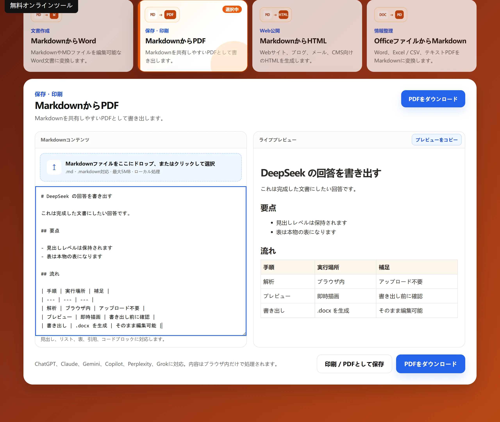

コンテンツを貼り付けるかアップロード
Markdown または MD ファイルのテキストを貼り付けると、見出し構造がそのまま保たれます。
無料オンラインツール
MarkdownやMDファイルから共有しやすいPDFを作成します。 変換はブラウザ内で実行され、コンテンツはアップロードされません。

使い方
Markdown または MD ファイルのテキストを貼り付けると、見出し構造がそのまま保たれます。
書き出す前に、見出し・リスト・引用・コードブロックの表示を確認できます。
A4 の PDF として書き出し、保存・印刷・共有に使えます。
よくある質問
基本機能は無料で、アカウント登録も不要です。内容がブラウザの外に送信されることはありません。
できます。DeepSeek や ChatGPT などが出力した Markdown を貼り付けて、そのまま PDF として書き出せます。
いいえ。プレビューと PDF の書き出しはすべてブラウザ内で完結します。
はい。見出し・リスト・表・引用・コードブロックを反映します。
活用場面
開いて読むだけなら、レイアウトを誤って変える心配がありません。
A4 のページ割りは固定なので、数か月後も同じ体裁で印刷できます。
下書きが承認されたら、PDF にすることで確定した状態がはっきりします。
制限
現在は A4 縦のみ出力します。横向きや独自の余白は設定できません。
画像はコピーしたテキストに含まれないため、生成した PDF には入りません。
本文幅は約 186 mm です。列の多い表は圧縮されます。
ほかのツール